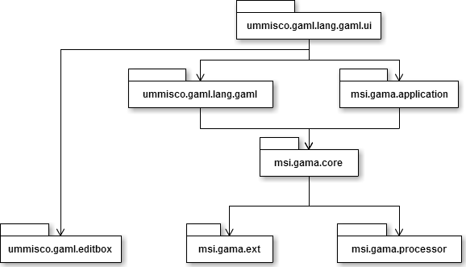
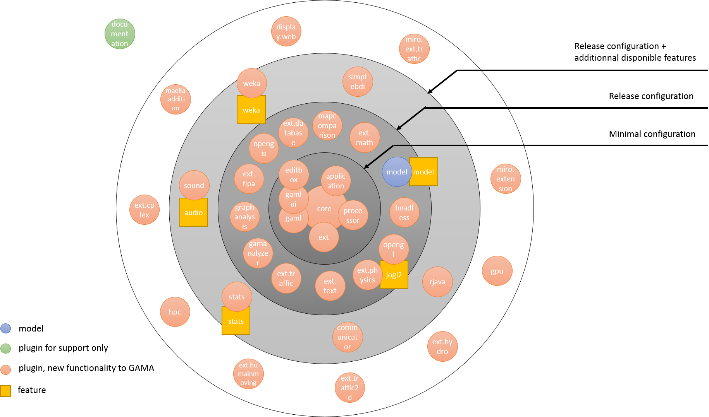

GAMA is made of a number of Eclipse Java projects, some representing the core projects without which the platform cannot be run, others additional plugins adding functionalities or concepts to the platform.
Vocabulary: Each project is either designed as a plugin (containing an xml file “plugin.xml”) or as a feature (containing an xml file “feature.xml”).
To see how to create a plugin and a feature, please read this page.
Here is the list of projects which have to be imported in order to run the GAMA platform, and to execute a simple model in gaml language:
msi.gama.core : Encapsulates the core of the modeling and simulation facilities offered by the platform : runtime, simulation, meta-model, data structures, simulation kernel, scheduling, etc. It contains 2 main packages :
msi.gamamsi.gaml, wich defines the GAML modeling language: keywords, operators, statements, species, skills�msi.gama.application : Describes the graphical user interface (msi.gama.gui package). This project also contains the file gama1.7.Eclipse3_8_2.product, when you can configure the application (and also launch the application). It contains the following sub-packages :
msi.gama.gui.displaysmsi.gama.gui.navigatormsi.gama.gui.parametersmsi.gama.gui.swtmsi.gama.gui.viewsmsi.gama.gui.wizardsmsi.gama.gui.viewersmsi.gama.ext : Gathers all the external libraries upon which GAMA relies upon
msi.gama.lang.gaml : Contains the gaml.xtext file which defines the GAML grammarmsi.gama.lang.gaml.ui : Contains the GAML Editor (syntax highlighting, code completion�)msi.gama.processor : Is responsible for processing the annotations made in the Java source code and producing additions to GAML (Java, properties and documentation files), which are added into a source package called “gaml.additions” (containing two main generated files: GamlAdditions.java and GamlDocumentation.java). These additions are loaded automatically when GAMA launches, allowing extensions made by developers in other plugins to be recognized when their plugin is added to the platform.ummisco.gaml.editbox : Project used to define the edit boxes in the gaml ui.Minimal configuration projects dependencies:

From this minimal configuration, it is possible to add some features. Here is the list of the features installed by default in the release version:
idees.gama.mapcomparison : Contains some useful tools to do map comparaisonmsi.gaml.extensions.fipa : Provides some operators for communication between agents, using the FIPA standardsmsi.gama.headless : Enables to run simulations in console modesimtools.gaml.extensions.traffic : Provides operators and skills for traffic simulationsimtools.gaml.extensions.physics : Physics engine, collision modelling, using the library JBulletummisco.gaml.extensions.maths : Solving differential equation, using Euler methods and Runge Kutta.irit.gaml.extensions.database : Provides database manipulation tools, using SQL requestsirit.gaml.extensions.test : Add unitary test statementsummisco.gama.opengl : Provide a 3D visualization using OpenGL.simtools.gamanalyzer.fr : Adding tools for the analysis of several execution result of a simulation (in order to find some correlations).dream.gama.opengis : Used to load some geographic information datas from online GIS server.simtools.graphanalysis.fr : Advanced graph operatorsSome other plugins are not present by default in the release version (because their use is very specific), but it’s possible to install them through features. Here is the list of those plugins:
idees.gama.weka : Data-mining operators, using the library Weka.msi.gaml.architecture.simplebdi : Architecture for using the Belief-Desire-Intention software model.ummisco.gaml.extensions.sound : Use of sound in simulationsummisco.gaml.extensions.stats : Advanced statistics operatorsummisco.gama.communicator : Communication between several instances of GAMAummisco.gaml.extensions.rjava : Adding the R language into GAMA for data miningOther plugins will never be on the released version, and will never be loaded during the gama execution. They are just used in the “developer” version:
msi.gama.documentation : Generate automatically the documentation in the wiki form (and also a pdf file)Some other projects are still in the git repository in case we need to work on it one day, but they are either unfinished, obsolete, or used in very rare situations (They are not delivered in release versions, of course). Here is the list :
cenres.gaml.extensions.hydro : Provide some tools in order to create hydrology modelsmsi.gaml.extensions.traffic2d : Provide some tools for traffic in 2 dimensions (depreciated, now replace by msi.gaml.extensions.traffic)msi.gaml.extensions.humainmoving : Provide a skill to represent human movementummisco.gama.gpu : Computation directly on the GPU for more efficiency. Results or not concluant, slower than using CPU.msi.gama.hpc : “High Power Computing” to execute gama simulation in several computer.msi.gaml.extensions.cplex : Originaly designed to be able to run CPLEX function in GAMA. The CPLEX is a proprietary library, we can’t deliver it in the project. Instead, we use a stub, “cplex.jar”, that you can replace by the real cplex.jar file.irit.maelia.gaml.additions : Used for the project “Maelia”. Provide the possibility to represent the computing time in a simulation.msi.gama.display.web : Originaly designed to run some GAMA simulation in a browser, inside gama application, using WebGL. Does not work for the momentummisco.miro.extension : Once used for the “miro” project, no longer used.ummisco.miro.extension.traffic : Once used for the “miro” project, no longer used.ummisco.gama.feature.audio : sound pluginummisco.feature.stats : stats pluginummisco.gama.feature.opengl.jogl2 : gathers physics and opengl pluginssimtools.graphlayout.feature : gathers core, ext, processor and graphanalysis pluginsummisco.gama.feature.core : gathers mapcomparison, database, test, application, core, ext, headless, gaml, gaml.ui, processor, fipa, traffic and maths pluginsummisco.gama.feature.dependencies : a bunch of libraries and pluginsother.gama.feature.plugins gathers hydro, opengis, addition, web, hpc, cplex, traffic2d, communicator, gpu, stats, extensions and traffic pluginsummisco.gama.feature.models : model pluginidees.gama.features.weka : weka pluginummisco.gama.feature.jogl2.product : gathering of the following features : core, dependencies, models, jogl2ummisco.gama.feature.product : gathering of the following features : core, dependencies, models, jogl1Beside those plugins and features, a project dedicated to gather a bunch of examples is also in the git repository. It contains gaml code:
msi.gama.modelsGlobal architecture of GAMA (nb : the features graphlayout, core, dependencies, plugins, jogl2.product and product are not represented here)
